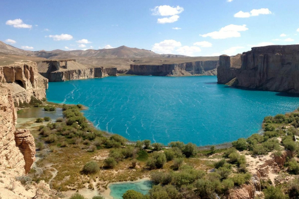
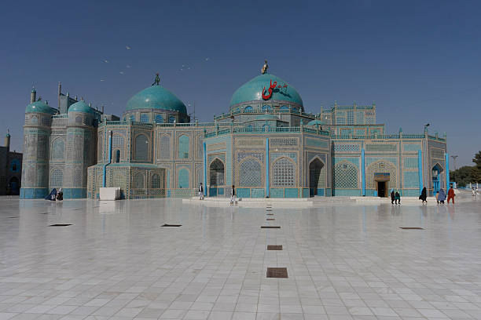

Location: Bamyan Province
Famous for its stunning blue lakes surrounded by mountains. It is Afghanistan's first national park.

Location: Balkh Province
Famous for its beautiful look, also known as "The Blue Mosque".
It's widely known for its Persian architecture and houses the tomb of Ali, the cousin and son-in-law of the Prophet Muhammad.